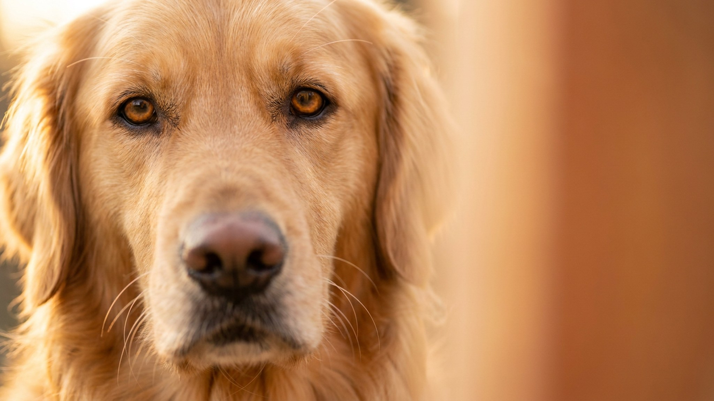

На выставке афганская борзая — это струящаяся шёлковая шерсть до пола и осанка модели. Дома та же шерсть за пару дней без расчёски сваливается в колтуны, а собака смотрит на вас с выражением «я подумаю над вашей просьбой». За аристократичной внешностью прячется независимый охотник родом с гор Афганистана. Разберём характер, честный уход за шубой и кому такая собака подойдёт, а кому станет ежедневным испытанием.
🐾 У вас афганская борзая?
AnimaLife соберёт уход под породу: к каким болезням есть склонность, что проверять по возрасту, чем кормить и когда пора к врачу. Бесплатно, прямо в мессенджере.
Собрать план ухода → Собрать в MAX →
У вас iPhone? AnimaLife есть в App Store
Афгана часто называют «упрямым» и даже «недалёким». На деле это одна из самых самостоятельных пород: тысячи лет она гнала добычу по горам без команд человека и привыкла принимать решения сама. Отсюда репутация «кошки в теле собаки».
Длинная шелковистая шерсть афгана — без плотного подшёрстка, поэтому она сваливается быстро и незаметно, особенно за ушами, под лапами и на «штанишках». Это не порода «расчесал раз в неделю и забыл».
Афган — спринтер: ему важна возможность разогнаться на полную, а не только ходить рядом на поводке. При этом в доме это спокойная, почти диванная собака.
🐾 Ваш питомец — афганская борзая?
Заведите профиль в AnimaLife: приложение запомнит породу, возраст и вес и будет подсказывать по уходу именно для неё. Вопросы AI-ветеринару — круглосуточно и бесплатно.
Завести профиль → Завести в MAX →
У вас iPhone? AnimaLife есть в App Store
Материал носит информационный характер и не заменяет очную консультацию ветеринара.
🐾 Понравился разбор?
Подпишитесь на канал — каждый день разбираем по одному тревожному симптому у кошек и собак: что в пределах нормы, а когда пора к врачу. Подпишитесь, чтобы не пропустить разбор, который может спасти здоровье вашего питомца.